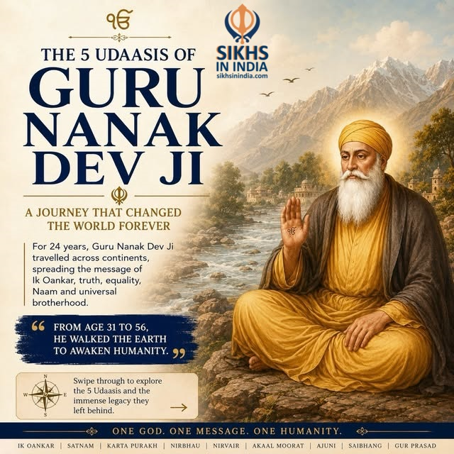
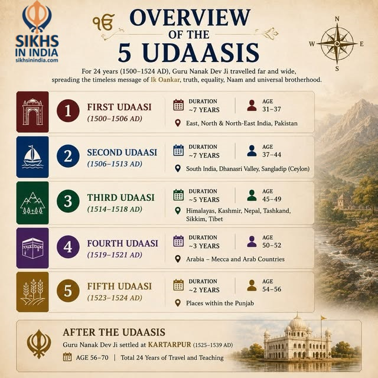
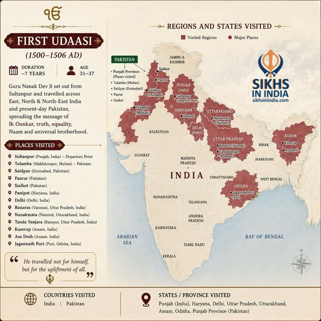
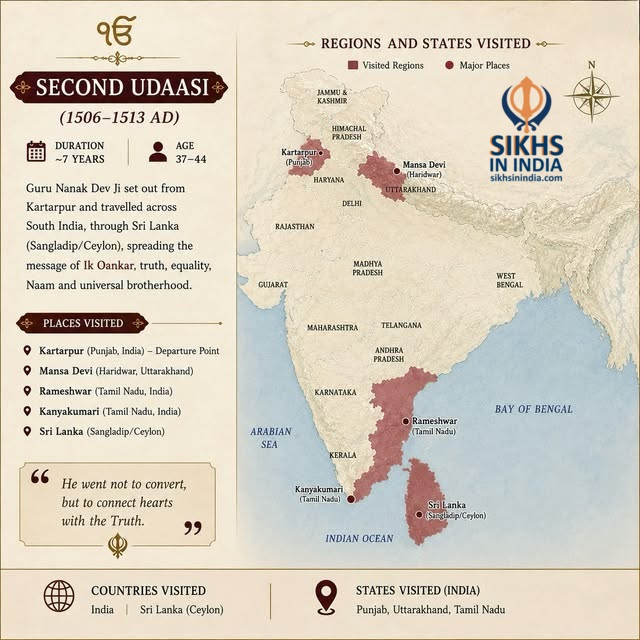

गुरु नानक देव जी की उदासियाँ
उदासियाँ क्या थीं?
सिख धर्म के संस्थापक गुरु नानक देव जी इतिहास के महान यात्रियों में से भी एक थे। लगभग 24 वर्षों तक उन्होंने पैदल और समुद्र के रास्ते यात्राएँ कीं — पंजाब से असम और ओडिशा तक, दक्षिण में श्रीलंका तक, उत्तर में हिमालय तक और पश्चिम में मक्का और बगदाद तक — ताकि लोगों को सृष्टि की एकता का बोध करा सकें। इन यात्राओं में उनके साथी भाई मरदाना थे, जो गुरु जी के बाणी गाते समय रबाब बजाते थे।
इन आध्यात्मिक यात्राओं को उदासियाँ कहा जाता है। यह शब्द उदास से बना है, जिसका अर्थ है वैराग्य: इन यात्राओं का उद्देश्य सीमाएँ पार करना नहीं, बल्कि लोगों के हृदय तक पहुँचना था।


आम तौर पर चार प्रमुख उदासियाँ मानी जाती हैं — पूर्व, दक्षिण, उत्तर और पश्चिम की ओर। पुरातन जनमसाखी जैसी कुछ जनमसाखी परंपराएँ पंजाब के भीतर एक पाँचवीं, छोटी यात्रा का भी उल्लेख करती हैं। यह पृष्ठ पाँच यात्राओं के विवरण का अनुसरण करता है। तिथियाँ अनुमानित हैं और अलग-अलग स्रोतों में भिन्न हैं।
पहली उदासी: पूर्वी, उत्तरी और पूर्वोत्तर भारत (लगभग 1500–1506)

सुल्तानपुर लोधी से चलकर गुरु नानक देव जी आज के पाकिस्तान में तुलंबा, सैदपुर (एमिनाबाद), पसरूर और सियालकोट गए, और फिर पूर्व की ओर पानीपत, दिल्ली और बनारस होते हुए नानकमता, टांडा वणजारा, असम के कामरूप और आसा देश, तथा ओडिशा में जगन्नाथ पुरी पहुँचे। यह सबसे लंबी यात्रा थी।
इसकी सबसे प्रसिद्ध घटनाओं में गुरु जी की हरिद्वार यात्रा है। लोगों को अपने पूर्वजों के लिए उगते सूर्य की ओर जल फेंकते देखकर उन्होंने पश्चिम की ओर, पंजाब में अपने खेतों की ओर जल फेंकना शुरू किया: यदि उनका जल परलोक तक पहुँच सकता है, तो उनका जल कहीं कम दूरी पर स्थित खेतों तक क्यों नहीं? यह सीख थी कि समझ के बिना कर्मकांड व्यर्थ है। कामरूप में वे तांत्रिक और शाक्त परंपराओं के अनुयायियों से मिले और सिखाया कि परमात्मा तक प्रेम और भक्ति से पहुँचा जाता है, भय के कर्मकांडों से नहीं।
दूसरी उदासी: दक्षिण भारत और श्रीलंका (लगभग 1506–1513)

दूसरी यात्रा में गुरु जी हरिद्वार (मनसा देवी) होते हुए भारत के दक्षिण में तमिलनाडु के रामेश्वरम और कन्याकुमारी तक गए, और समुद्र पार श्रीलंका पहुँचे, जिसे जनमसाखियों में संगलदीप कहा गया है। हर जगह वे हर धर्म और वर्ग के लोगों से मिले और इक ओंकार, सत्य और समानता का वही संदेश दिया।
तीसरी उदासी: हिमालय और उससे आगे (लगभग 1514–1518)

तीसरी उदासी में गुरु नानक देव जी उत्तर में हिमालय की ओर गए — कश्मीर, नेपाल, सिक्किम और तिब्बत होते हुए आज के उज़्बेकिस्तान में ताशकंद तक। उन्होंने नाथ योगियों (सिद्धों) और बौद्ध भिक्षुओं से संवाद किया और परमात्मा तक पहुँचने के मार्ग के रूप में तपस्या और समाज से अलगाव पर प्रश्न उठाए।
जनमसाखियाँ सिद्धों के साथ उनके संवाद को इसी यात्रा में सुमेर पर्वत पर बताती हैं। गुरु जी की यह शिक्षा — कि सच्चा त्याग अहंकार का है, परिवार और सामाजिक दायित्वों का नहीं — श्री गुरु ग्रंथ साहिब जी की बाणी सिध गोसटि में दर्ज है।
चौथी उदासी: अरब, मक्का और बगदाद (लगभग 1519–1521)

चौथी उदासी सबसे दूर तक गई। गुरु जी पश्चिम की ओर मुल्तान, लाहौर, सिंध और बलूचिस्तान होते हुए होर्मुज़, फिर मक्का और मदीना, और उसके बाद बसरा और बगदाद गए। जनमसाखियाँ बताती हैं कि उन्होंने हिंदू और मुस्लिम वेशभूषा को मिलाकर बना वस्त्र पहना था, और उनके साथ मुस्लिम रबाबी भाई मरदाना थे।
जनमसाखियों के अनुसार मक्का में गुरु जी काबा की ओर पैर करके विश्राम कर रहे थे। टोके जाने पर उन्होंने कहा कि उनके पैर उस दिशा में कर दें जहाँ परमात्मा न हो — और कहा जाता है कि जिस ओर उनके पैर घुमाए गए, काबा उसी ओर दिखाई दिया। सीख यह है कि परमात्मा हर जगह है, किसी एक दिशा तक सीमित नहीं। बगदाद में उनकी यात्रा की याद में एक स्मारक सदियों तक रहा बताया जाता है।
पाँचवीं उदासी: पंजाब के भीतर (लगभग 1523–1524)

पाँचवीं यात्रा छोटी थी और पंजाब के भीतर रही। करतारपुर से गुरु जी सुल्तानपुर लोधी, कपूरथला, जालंधर, दोआबा और मालवा क्षेत्र, गोइंदवाल, तलवंडी (ननकाना साहिब), रोपड़, वज़ीराबाद, लाहौर और बटाला गए, लोगों से मिले और इक ओंकार, सत्य, समानता और नाम का वही संदेश फैलाया।
उदासियों के बाद: करतारपुर (1525–1539)

अपनी यात्राओं के बाद गुरु नानक देव जी रावी के तट पर करतारपुर में बस गए और 1539 तक वहीं रहे। उन्होंने खेती की और संगत और लंगर की परंपरा पर आधारित एक समुदाय बनाया, तथा नाम जपना, किरत करनी (ईमानदारी की कमाई) और वंड छकना (मिल-बाँटकर खाना) का मार्ग सिखाया, जो सिख जीवन की नींव बना। करतारपुर साहिब अब पाकिस्तान में है और भारत से करतारपुर कॉरिडोर के रास्ते वहाँ जाया जा सकता है।
अक्सर पूछे जाने वाले प्रश्न
गुरु नानक देव जी की उदासियाँ क्या हैं?
उदासियाँ वे आध्यात्मिक यात्राएँ हैं जो गुरु नानक देव जी ने लगभग 1500 से 1524 के बीच दक्षिण एशिया, हिमालय और मध्य-पूर्व में कीं, ताकि हर धर्म के विद्वानों, संतों और आम लोगों तक इक ओंकार — परमात्मा की एकता — का संदेश पहुँचा सकें।
गुरु नानक देव जी ने कितनी उदासियाँ कीं?
आम तौर पर चार प्रमुख उदासियाँ मानी जाती हैं: पूर्व, दक्षिण, उत्तर और पश्चिम की ओर। कुछ जनमसाखी परंपराएँ पंजाब के भीतर एक पाँचवीं, छोटी यात्रा का भी उल्लेख करती हैं, इसीलिए उदासियों को अक्सर पाँच बताया जाता है।
क्या गुरु नानक देव जी मक्का गए थे?
हाँ। जनमसाखियाँ बताती हैं कि पश्चिम की उदासी में वे मक्का और मदीना गए, और उनके पैरों और काबा की प्रसिद्ध घटना का वर्णन करती हैं, जो सिखाती है कि परमात्मा हर दिशा में है।
उदासियों में कितना समय लगा?
कुल मिलाकर ये यात्राएँ लगभग 24 वर्षों में, लगभग 1500 से 1524 तक फैली रहीं, जिसके बाद गुरु नानक देव जी करतारपुर में बस गए।
उदासियों का उद्देश्य क्या था?
ये सामान्य अर्थ में तीर्थयात्राएँ नहीं थीं। गुरु नानक देव जी ने इनके द्वारा पुजारियों, विद्वानों, योगियों और शासकों से संवाद किया, खोखले कर्मकांड, जाति-भेद और अंधविश्वास को चुनौती दी, और नाम जपना, किरत करनी और वंड छकना का मार्ग बताया।
उदासियों के बाद गुरु नानक देव जी कहाँ बसे?
रावी के तट पर करतारपुर में, जो आज पाकिस्तान में है, जहाँ वे 1539 तक रहे। भारत से करतारपुर कॉरिडोर के रास्ते वहाँ जाया जा सकता है।